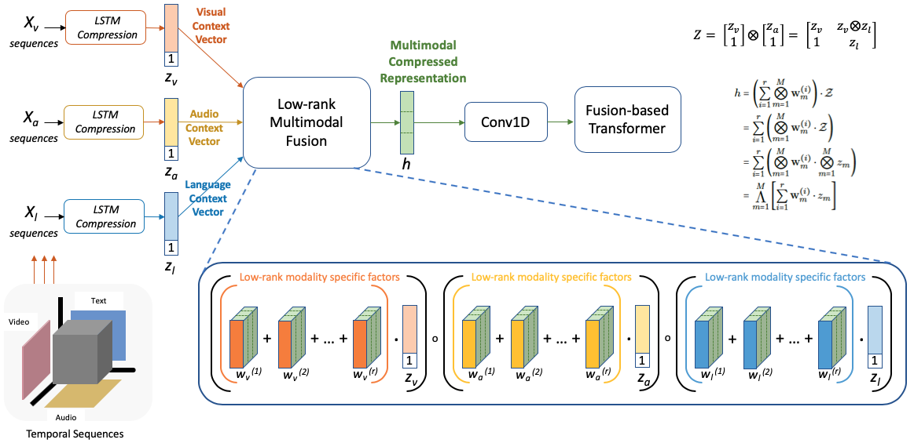
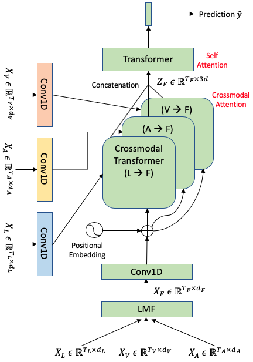

From Low-Rank Fusion to LoRA: When Old Ideas Find New Life
How a 2020 applied research paper on multimodal emotion understanding shares its mathematical DNA with today's biggest AI breakthroughs — and why the scientific community has more buried treasure than we think.
In 2020, my co-authors and I at Intel Labs published a modest paper: Low Rank Fusion based Transformers for Multimodal Sequences. We weren't trying to change the world. We were trying to solve a practical problem: how do you get a model to understand human emotion by fusing what someone says, how they sound, and what their face does — without blowing up your parameter count?
Five years later, I find myself doing a double-take. The core mathematical ideas we used — low-rank factorization, cross-modal attention, parameter-efficient fusion — have become the backbone of techniques now powering the generative AI revolution. Not because of our paper, but because these ideas were always good. They just needed the right moment.
This blog isn't a victory lap. It's a reflection on how applied research plants seeds that sometimes bloom in unexpected places — and a call to dig deeper into the scientific literature for ideas whose time may have finally come.
The Problem We Were Solving
In 2020, "multimodal AI" meant classification, not generation. We weren't building chatbots that see and hear. We were building systems that could watch a YouTube video and tell you whether the speaker felt happy, sad, or angry — by jointly processing their facial expressions, vocal tone, and words.
The dominant approach at the time, the Multimodal Transformer (MulT), used nine parallel transformer models with pairwise cross-modal attention between every combination of modalities. It worked, but it was expensive — over a million parameters for a classification task.
Our question was simple: do you really need all of that?
Low-Rank Fusion: The Core Idea
The key insight was that the interaction space between modalities — the full tensor product of language, audio, and vision representations — is high-dimensional but has low intrinsic rank. You don't need to compute the entire thing.

We used Low Rank Matrix Factorization (LMF) to approximate the full multimodal interaction tensor using compact, modality-specific factors. This fused representation then served as a hub — individual modalities would attend to it via cross-modal transformers to enrich their own representations.

The result? Comparable performance to MulT with roughly half the parameters and 40% faster training. Not a breakthrough in accuracy — a breakthrough in efficiency.
The Mathematical Thread to LoRA
Here's where it gets interesting. In 2021, Hu et al. published LoRA: Low-Rank Adaptation of Large Language Models, and the technique quickly became the default way to fine-tune large models. The core idea? The weight update matrix during fine-tuning is high-dimensional but has low intrinsic rank. Instead of updating billions of parameters, you learn two small low-rank matrices.
Sound familiar?
We applied low-rank factorization to compress the multimodal fusion space. LoRA applies it to compress the weight update space. Different problem, same mathematical soul. The shared insight is that high-dimensional interactions in neural networks are often surprisingly low-rank — you can approximate them cheaply without losing what matters.
This wasn't a coincidence. The mathematical machinery traces back through Liu et al.'s 2018 LMF work, and further to classical matrix decomposition techniques. By 2024–2025, the circle closed further with Tensor LoRA methods (LoRTA, TT-LoRA) that use higher-order tensor decompositions — the very same family of techniques used in multimodal fusion research — to compress adaptation across layers and attention heads simultaneously.
From Multi-Tower to Single-Tower: A Journey We Started
In 2020, multimodal meant multi-tower. Separate encoders for each modality, with engineered bridges between them. Our work was already pushing toward consolidation — using a fused signal as a central hub to reduce the number of separate transformer stacks.
Today, the field has completed that journey. Models like Gemini, GPT-4o, and Claude process all modalities through a shared transformer backbone. Vision patches, audio tokens, and text tokens are projected into a unified embedding space, and a single attention mechanism handles the rest. Cross-modal reasoning isn't engineered anymore — it emerges from scale.
Our multi-tower architectures feel like artifacts now, but the impulse behind them — fewer towers, more fusion, less redundancy — was pointing in exactly the right direction.
The Bigger Point: Buried Treasure in the Literature
This is the part I care about most. Our paper wasn't foundational work. It was an applied contribution to multimodal sentiment analysis, building on ideas from Tsai et al. and Liu et al. But the mathematical principles we explored turned out to matter far beyond our specific problem.
This pattern repeats across AI research. Mixture of Experts was proposed in 1991 but didn't go mainstream until Mixtral in 2023. Attention mechanisms existed for years before the Transformer made them universal. Contrastive learning lived in metric learning papers long before CLIP made it transformative.
And the pattern continues today. Consider DeepSeek's recent Engram work (January 2025), which introduces conditional memory — a dedicated lookup mechanism for factual knowledge that complements the conditional computation of Mixture-of-Experts. Their key finding: given a fixed compute budget, the optimal architecture allocates ~75–80% of sparse capacity to dynamic computation (MoE) and ~20–25% to static memory lookup. The result is dramatic improvements on knowledge-intensive benchmarks with negligible throughput cost.
Engram is a perfect example of an idea that the broader community should pay attention to: separating what a model knows from how it thinks. It's the kind of architectural innovation — bringing structured domain knowledge into the learning process through dedicated mechanisms rather than forcing everything through the same compute pathway — that echoes years of prior work on knowledge integration, memory-augmented networks, and domain-adapted architectures.
How much more of this is sitting in workshop papers, applied research, and domain-specific venues, waiting for the right context to become relevant?
Looking Forward
The AI field moves fast, but the mathematical foundations evolve more slowly. Low-rank structure, efficient fusion, parameter sharing, domain-aware architectures — these aren't trends. They're principles. They were useful when we were classifying emotions from YouTube videos, and they're useful now that we're building models that see, hear, and generate.
If there's one takeaway, it's this: read more papers. Not just the ones at the top of the leaderboard, but the applied work, the workshop contributions, the domain-specific explorations. The next LoRA might already be published. It might just be waiting for its moment.
Saurav Sahay was a researcher at Intel Labs' Anticipatory Computing Lab. The original paper, "Low Rank Fusion based Transformers for Multimodal Sequences" (Sahay, Okur, Kumar, Nachman, 2020), is available on arXiv.